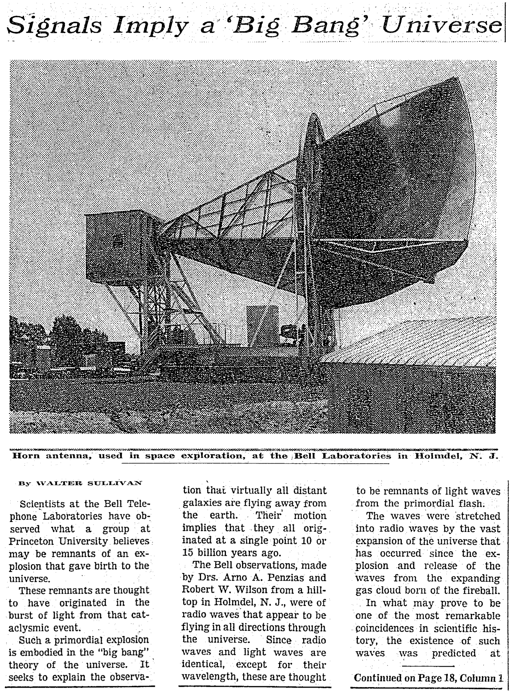

Signals Imply a 'Big Bang' Universe (우주의 '빅뱅'을 의미하는 신호).
A. Penzias와 R. Wilson의 관측에 대한 뉴욕타임스의 1965년 5월 21일자 보도는 다음과 같이 시작한다.
벨랩의 과학자들이 관측한 것을 프린스턴 대학 사람들은 우주가 탄생하는 폭발의 잔해일 것이라고 생각한다. (Scientists at the Bell Telephone Laboratories have observed what a group at Princeton University believes may be remnants of an explosion that gave birth to the universe.)
앨런 구스의 책 The Inflationary Universe\(\)에 따르면, 윌슨은 이 기사를 보고서야 비로소 그들이 본 것을 세상이 얼마다 진지하게 받아들이고 있는지 알았다고 말했다.
